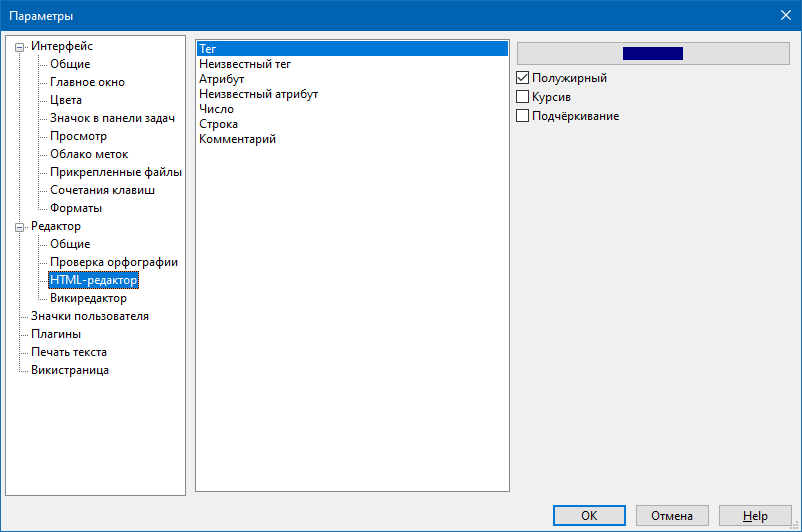

Редактор - HTML-редактор

Данный раздел содержит настройки для раскраски HTML-кода на HTML-странице или на вкладке HTML викистраницы. Здесь можно задать цвета и начертание шрифта для HTML-тегов, их атрибутов, чисел, HTML-комментариев, строк в формате HTML, а также ошибочных HTML-элементов.
Имя шрифта и его размер устанавливаются в разделе Редактор - Общее.